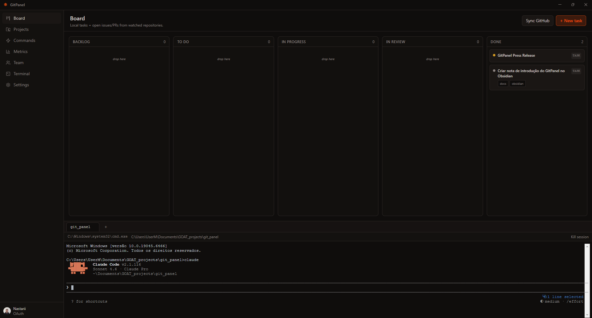
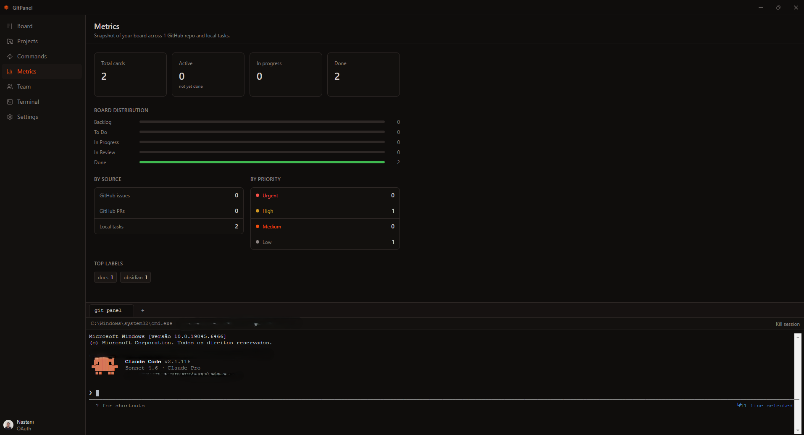
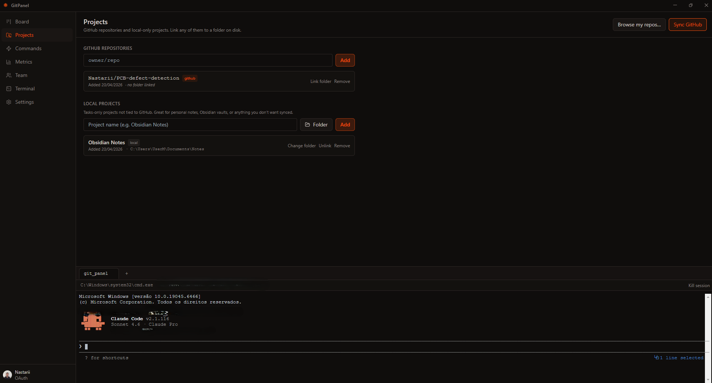
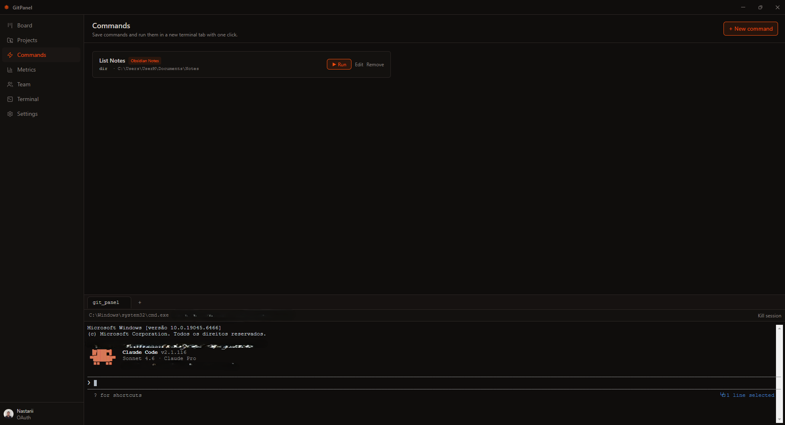

Kanban board, metrics, multi-repo sync, integrated terminal, and an MCP server for AI agents — all in one focused Electron desktop app.

Features
Replace GitHub, Jira, Notion, and separate terminals with a single focused panel built for developers.
Drag-and-drop Issues and PRs across Backlog → To Do → In Progress → In Review → Done. Local tasks and GitHub cards live on the same board.
Card counts per column, source breakdown (Issues vs PRs vs local), priority matrix, and top labels — all at a glance.
Watch any GitHub repository or register a local folder. Link repos to local clone paths so the terminal opens at the right cwd automatically.
Store shell commands with an associated project and working directory. Run dev servers, builds, or AI agent CLIs with a single click.
A full PTY terminal powered by node-pty + xterm.js. Multi-tab, context-aware, with ANSI/VT100 support. Run Claude Code without leaving the app.
Built-in Model Context Protocol server. Let Claude, Copilot, or any MCP-compatible AI agent read and write your board without touching the UI.
Screenshots
Every view is designed to keep context switching to a minimum.



MCP Server
GitPanel ships with a built-in Model Context Protocol server that exposes the board, tasks, projects, and commands to any MCP-compatible AI assistant — including Claude Code running inside the integrated terminal.
Changes made through MCP are reflected in the GitPanel UI within seconds via a file watcher. No polling, no manual refresh.
get_board_summaryCard counts per columnlist_cardsCards with IDs, titles, prioritiescreate_taskCreate a task on the boardupdate_taskRename, reprioritize, re-labelmove_cardMove any card to any columndelete_taskPermanently remove a local tasklist_projectsAll watched repos and pathscreate_github_issueOpen a real issue on GitHublist_commandsAll saved commandsrun_commandExecute a saved commandDownload
Free and open source. No account required for local mode.
Download for Windows — v1.0.0Windows 10 / 11 · 64-bit · Requires Node.js 20+ for development